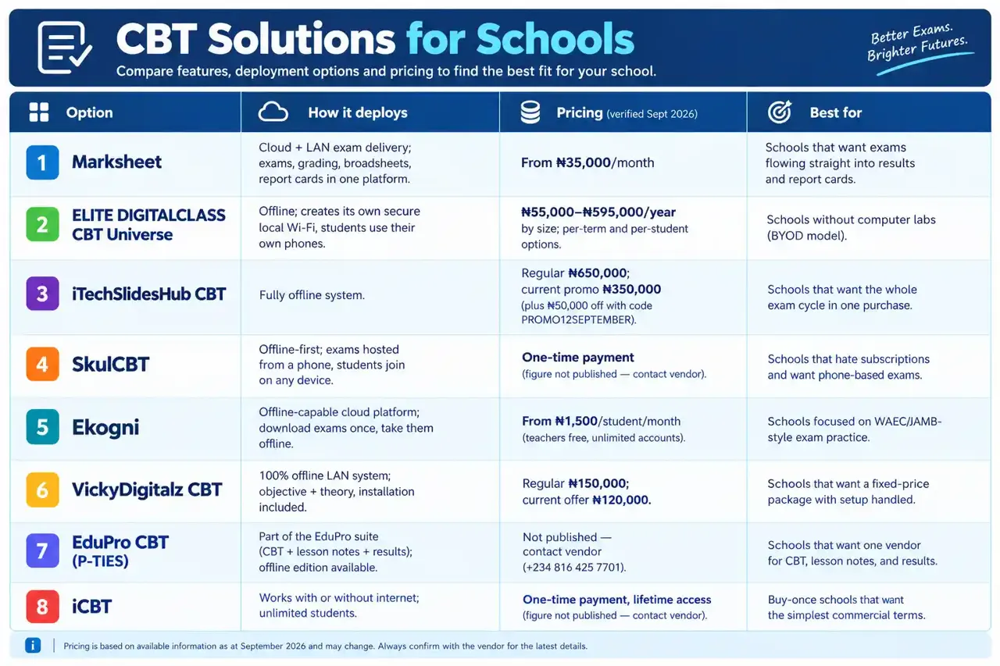
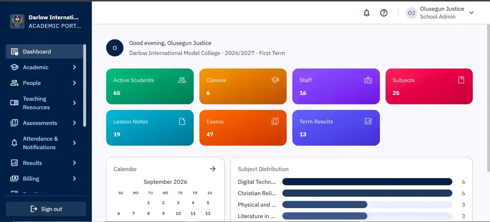
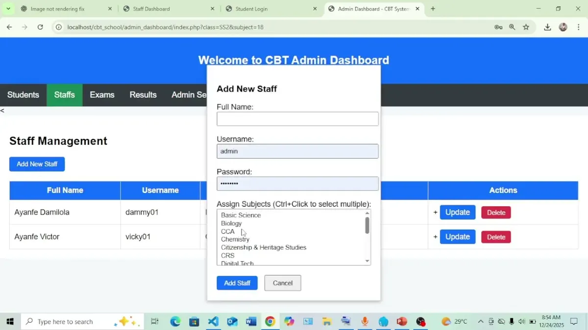

CBT Software for Schools in Nigeria (2026): 8 Options Compared
Computer-based testing isn't a luxury extra for Nigerian schools anymore — it's preparation for the future of the national exams. WAEC has committed to moving the WASSCE fully to CBT by 2026 (BusinessDay, 2025), and schools that already run their internal exams on computer give their students a head start.

By the Marksheet Editorial Team · Updated: September 2026
> Disclosure: This comparison is written by the team behind Marksheet, a Nigerian exam and result-processing platform. Marksheet is one of the eight products reviewed below, and we say plainly where it wins and where it loses. Every price in this guide was verified on 25–26 September 2026 and is dated. Where a vendor doesn't publish a price, we say "contact vendor" — we don't guess. We did not accept payment from any vendor for placement.
Computer-based testing isn't a luxury extra for Nigerian schools anymore — it's preparation for the future of the national exams. WAEC has committed to moving the WASSCE fully to CBT by 2026 (BusinessDay, 2025), and schools that already run their internal exams on computer give their students a head start. The question isn't whether to adopt CBT software; it's which of the many options on the market fits your school, your budget, and your devices.
This guide compares eight CBT products Nigerian schools are actually using in 2026 — with real prices, honest pros and cons (including Marksheet's limitations), and advice on matching the right tool to your situation.
────────────────────────────────────────────────────────────
The 8 options at a glance
| Option | How it deploys | Pricing (verified Sept 2026) | Best for |
|---|---|---|---|
| Marksheet | Cloud + LAN exam delivery; exams, grading, broadsheets, report cards in one platform | From ₦35,000/month | Schools that want exams flowing straight into results and report cards |
| ELITE DIGITALCLASS CBT Universe | Offline; creates its own secure local Wi-Fi, students use their own phones | ₦55,000–₦595,000/year by size; per-term and per-student options | Schools without computer labs (BYOD model) |
| iTechSlidesHub CBT | Fully offline system | Regular ₦650,000; current promo ₦350,000 (plus ₦50,000 off with code PROMO12SEPTEMBER) | Schools that want the whole exam cycle in one purchase |
| SkulCBT | Offline-first; exams hosted from a phone, students join on any device | One-time payment (figure not published — contact vendor) | Schools that hate subscriptions and want phone-based exams |
| Ekogni | Offline-capable cloud platform; download exams once, take them offline | From ₦1,500/student/month (teachers free, unlimited accounts) | Schools focused on WAEC/JAMB-style exam practice |
| VickyDigitalz CBT | 100% offline LAN system; objective + theory, installation included | Regular ₦150,000; current offer ₦120,000 | Schools that want a fixed-price package with setup handled |
| EduPro CBT (P-TIES) | Part of the EduPro suite (CBT + lesson notes + results); offline edition available | Not published — contact vendor (+234 816 425 7701) | Schools that want one vendor for CBT, lesson notes, and results |
| iCBT | Works with or without internet; unlimited students | One-time payment, lifetime access (figure not published — contact vendor) | Buy-once schools that want the simplest commercial terms |
Methodology: We reviewed each vendor's current published material in September 2026 — product websites, YouTube walkthroughs, and marketplace listings. Prices are quoted exactly as published, with sources and dates. Where a price isn't public, we say "contact vendor" rather than inventing one. This is the same review standard as our pillar guide, the 10 best exam software for schools in Nigeria (2026).
────────────────────────────────────────────────────────────
The 8 options in detail
1. Marksheet — exams that flow into results and report cards
Marksheet is the only product here built as a single chain from syllabus planning to verified report cards. Its exam module delivers tests over your school's LAN without internet, then results flow into the same platform's grading, broadsheet computation, and printable report cards — no re-typing scores, no exporting between systems.
- Pricing: From ₦35,000/month (verified September 2026). Subscription model.
- Honest pros: The all-in-one story is real — objective questions auto-mark, theory answers get AI-assisted grading, and report cards come out verification-ready. If your pain is result processing as much as exam delivery, nothing else on this list covers both ends of the pipeline.
- Honest limitations: It's a subscription, so over several years it costs more than one-time-purchase rivals. A school that only wants exam delivery is paying for result-processing machinery it won't use. And while exams run on LAN, the report-card publishing side needs internet at some point — it's not the pick for a school that is fully offline all the time.

2. ELITE DIGITALCLASS CBT Universe — exams on students' own phones
Elite Computer's distinctive play: the software creates its own secure local Wi-Fi network in the school, and students write exams on their own smartphones, tablets, or laptops — no computer lab required. Anti-cheat features include screen lock, tab detection, and camera ID verification. Teachers upload their own questions from Word or Excel; it isn't a preloaded question bank.
- Pricing: Lite (up to 50 students) ₦55,000/year; Standard (250 students) ₦115,000/year; Professional (1,000 students) ₦235,000/year; Universe (unlimited) ₦595,000/year. Also per term (₦30,000/term for small schools), per session, and per student (₦2,500/student). A free trial covers one class of up to 10 students. (Published in their video description, checked September 2026.)
- Honest pros: The BYOD model removes the biggest cost barrier — you don't need a computer lab. Published tiered pricing is transparent, and the free trial lets you test with a real exam before committing.
- Honest limitations: Phone-based exams need a clear device policy — what counts as cheating on a personal phone has to be defined and enforced. At scale, per-student/year billing adds up; compare the unlimited tier against flat-fee options if you have 500+ students.
3. iTechSlidesHub CBT — the fully offline all-rounder
Fully offline: objective questions with auto-marking, theory questions for teacher marking, fill-in-the-blank and true/false types, bulk student registration and question import, live exam monitoring, anti-malpractice monitoring, and report-card generation — the whole exam cycle in one package.
- Pricing: Regular ₦650,000; September 2026 promo lists ₦350,000, with an extra ₦50,000 off using the code PROMO12SEPTEMBER on itechslides.com.ng. Phone: 09130807365. Confirm the promo is still live before budgeting — promo prices expire.
- Honest pros: Covers everything including theory marking and report cards. One purchase, not a subscription.
- Honest limitations: The real price depends on catching a promo — the non-promo price is among the highest on this list. Anti-malpractice "monitoring" claims are hard to verify from marketing alone; ask for a demo on your own network before paying.
4. SkulCBT — offline-first, pay once
SkulCBT's headline pitch is simple: host exams directly from a phone, students join on any device, everything works 100% offline, one-time payment with lifetime updates. It claims 100+ Nigerian schools and bundles AI-powered report-card comments, fee management with auto-balance receipts, a parent portal, and analytics.
- Pricing: One-time payment — but the figure isn't published publicly. Contact the vendor (07032977572) for a current quote (verified "price not published," September 2026).
- Honest pros: No subscriptions, no renewals, lifetime updates — attractive for schools tired of monthly bills. Phone-based hosting keeps hardware requirements minimal, and the fee-management add-ons are genuinely useful for small schools.
- Honest limitations: Unpublished pricing means you can't budget without a sales conversation — get the full quote in writing, including what's covered after purchase (updates, support, device limits). And as with any "100+ schools" claim, ask for two references you can actually call.
5. Ekogni — offline exams with WAEC/JAMB-style content
Ekogni's pitch is exam practice that feels like the real national exams: create WAEC, JAMB, or internal-format exams (objective and essay), download them once, and students take them fully offline — results sync when connectivity returns. Word, PDF, and CSV question-bank imports are supported.
- Pricing: From ₦1,500/student/month, with unlimited free teacher accounts (ekogni.com, checked September 2026).
- Honest pros: The offline-exams-with-exam-style-content combination is exactly what SS3 classes need for WAEC/JAMB preparation. Free unlimited teacher accounts remove the seat-licence friction other vendors impose.
- Honest limitations: Per-student monthly billing adds up fast — a 500-student school is looking at ₦750,000/month at list price, which dwarfs most flat-fee options here. This is a practice/exam-delivery tool, not a result-processing system; your broadsheets still need somewhere to go.
6. VickyDigitalz CBT — fixed-price package with installation handled
A 100% offline LAN-based system covering objective and theory assessments, auto marking, instant results, attendance and student passport management, class positions, and report-sheet generation. Notably, the vendor handles installation, deployment, and initial setup — and the site shows real exam sessions in schools, not just product screenshots.
- Pricing: Regular ₦150,000; current offer ₦120,000 (ukehacademy.com, checked September 2026). The offer covers installation and initial setup.
- Honest pros: A fixed price with installation included removes the two things that sink school IT projects: unknown final cost and a setup nobody owns. Real-deployment photos are a credibility plus. At ₦120,000 it's mid-range among the one-time options.
- Honest limitations: Sold through an orientation funnel — expect a sales conversation before you see a demo. The "limited-time offer" framing means the price may move; confirm in writing. Smaller vendor footprint than the big names, so ask for school references.

7. EduPro CBT (P-TIES) — one ecosystem: CBT, lesson notes, results
P-TIES Ltd (Piety Technology Investment and Educational Services) builds EduPro, a suite of school tools: EduPro Lesson Notes, EduPro CBT, and EduPro Results. There is a published "EduPro CBT Off-line" edition with a public download page on their site (pietyties.com.ng — note their ptiesltd.com.ng domain doesn't resolve; the working official site is pietyties.com.ng).
- Pricing: Not published anywhere on their site — the subscription plans sit behind a school-admin login. Contact the vendor (phone/WhatsApp +234 816 425 7701, email info@ptiesltd.com). Verified as "price not published," September 2026.
- Honest pros: The suite framing is appealing — one vendor for lesson notes, CBT, and results means one relationship to manage. An offline edition exists, which fits schools with poor connectivity.
- Honest limitations: This is the thinnest public footprint on this list: no published feature list, no pricing, no demo videos on the official site (the portal page is a school-admin login with no product description). You're buying largely on the sales conversation — request a live demo, a written quote, and at least two school references before committing.
8. iCBT — buy once, use forever
iCBT works with or without internet, supports unlimited students, and sells on a one-time-payment, lifetime-access model. Features include an admin dashboard, auto-submit, question shuffling, on-screen calculator, bulk CSV student upload, and instant results export.
- Pricing: One-time payment, lifetime access — figure not published; contact vendor (Call/WhatsApp 08162846550). Verified September 2026.
- Honest pros: The simplest commercial model on this list — pay once, own it, unlimited students. The feature list is practical and exam-day focused.
- Honest limitations: "Lifetime access" is only as good as the company's lifetime — ask what happens if the vendor stops updating the software, and whether your data exports cleanly. Unpublished pricing, again, means a sales call before you can budget.
Also worth a look: CBTflux (₦40,000 one-time, never-expires licence — the cheapest named option, good for a small school's first step into CBT) and HisGrace CBT (Nigerian-built, local-network based — contact vendor for pricing and insist on a demo). Both were covered in our offline CBT guide ────────────────────────────────────────────────────────────
How to choose: match the tool to your situation
You have no computer lab. ELITE CBT Universe or SkulCBT — students use phones on a local network. This is the single biggest hardware saving on this page.
You want exams, results, and report cards in one place. Marksheet (from ₦35,000/month) or iTechSlidesHub (one-time, currently ₦350,000 promo). Don't buy a pure exam tool and a separate result tool if you can avoid it — double data entry is where errors creep in.
Your budget is minimal. CBTflux at ₦40,000 one-time, or a one-time licence like iCBT. Verify the feature fit first: cheap software that can't do theory marking or export results is a false economy.
You mainly run SS3/WAEC-JAMB practice. Ekogni — the exam-style content and offline practice mode are built for exactly this. Just do the per-student maths for your school size first.
You want a fixed price with setup handled. VickyDigitalz at ₦120,000 with installation included — no surprise costs, no orphaned setup.
You hate subscriptions. SkulCBT, iCBT, iTechSlidesHub, VickyDigitalz, or CBTflux — all one-time payments. Just read the fine print on what's included after year one.
Whatever you shortlist, run a real trial on your own network with your own devices before paying anything. Every vendor here offers a demo, trial, or orientation — the ones who won't let you test are telling you something. A 10-student trial in an afternoon exposes every gap a sales page hides.
────────────────────────────────────────────────────────────
The offline question (and why it matters)
Six of the eight options here run fully or partially offline — and that isn't a coincidence. Nigerian schools deal with unreliable internet, and exam day is the worst possible time to discover your connection is down. LAN-based exams mean the timer, the questions, and the marking all live inside your school building during the test.
Our complete offline CBT guide walks through how LAN exams work, the hardware you'll need (router, server laptop, power backup), and an exam-day checklist. If your school has shaky internet, read that before you buy anything.
────────────────────────────────────────────────────────────
What about total cost?
Software licences are only part of the bill. For the full picture — how subscription vs one-time maths work out over three years, plus hardware costs — see our 2026 exam software price guide. The short version: a subscription that includes result processing often beats a cheap exam-only tool once you factor in the second system you'd otherwise need.
────────────────────────────────────────────────────────────
Frequently asked questions
Which CBT software is best for a small school (under 100 students)?
ELITE's Lite edition (₦55,000/year, up to 50 students) or per-term billing (₦30,000/term) fits small schools well. For a one-time outlay, CBTflux (₦40,000) or VickyDigitalz's ₦120,000 package with installation are worth comparing.
Can students use their own phones for CBT exams?
Yes — ELITE CBT Universe and SkulCBT are built for exactly this (BYOD). You'll need a school Wi-Fi network and a clear device policy: phones connect to the exam network only, with data off.
Do these tools work without internet?
Most do, at least for exam delivery: Marksheet (LAN delivery), ELITE, iTechSlidesHub, SkulCBT, Ekogni (download-then-offline), VickyDigitalz, EduPro, and iCBT all run exams without internet. Cloud features (parent portals, online report publishing) need connectivity at some point.
How much should a school budget for CBT software in 2026?
From the verified prices above: ₦40,000 one-time at the cheapest end (CBTflux), ₦120,000–₦350,000 one-time in the mid-range, ₦35,000/month for an all-in-one subscription, or per-student models like Ekogni's ₦1,500/student/month. Hardware (router, devices, power backup) is a separate budget — see our price guide.
Can teachers set their own questions?
Every serious option here lets teachers type or bulk-upload their own questions (Word/Excel/CSV). Preloaded WAEC/JAMB-style banks (Ekogni) are a supplement, not a replacement for your scheme of work.
Do these tools mark theory/essay questions automatically?
Objective questions: yes, everywhere. Theory: iTechSlidesHub, VickyDigitalz, and Marksheet (AI-assisted) include theory-marking workflows; the rest rely on teacher marking with the results entered into the system.
Which option also does report cards?
Marksheet (verified report cards, full result pipeline), SkulCBT (AI-assisted comments), iTechSlidesHub (report-card generation), ELITE (PDF report cards), and VickyDigitalz (report sheets). If report cards matter to you, confirm the format matches what your school — and your inspectors — expect.
Is CBT software enough for WAEC's CBT requirements?
Internal CBT software prepares your students and staff for the WAEC CBT world, but WAEC's accredited-centre requirements are separate and much heavier (250+ systems, server, LAN, CCTV per BusinessDay's 2025 reporting). Running internal CBT is excellent preparation, not accreditation.
What stops students cheating on computer exams?
Question shuffling, timers with auto-submit, screen locks, tab detection (ELITE), live monitoring dashboards, and — most important — invigilation. Our practical malpractice guide for principals We already ran the offline guide's trial — which of these was on it?
Marksheet, iTechSlidesHub, ELITE, SkulCBT, Ekogni, iCBT, CBTflux, and HisGrace all appeared in our offline CBT options guide. This comparison adds VickyDigitalz and EduPro and ranks all eight specifically as exam software, not just offline tools.
────────────────────────────────────────────────────────────
The bottom line
There is no single "best" CBT software — there's the best fit for your school's devices, budget, and ambitions. No computer lab? Go phone-based (ELITE, SkulCBT). Want the whole exam-to-report-card chain? Go all-in-one (Marksheet, iTechSlidesHub). Practising for WAEC/JAMB? Go content-focused (Ekogni). Tight budget? Go one-time (CBTflux, iCBT, VickyDigitalz). The common thread: trial it on your own network before you pay, and never buy on a sales call alone.
If you'd like to see how computer exams can flow straight into marked scripts, broadsheets, and verified report cards — without re-typing a single score — [book a demo at marksheet.top](https://marksheet.top). We'll run it on your school's own questions.
See a full term run in 25 minutes
We’ll set up a session live, run a mock exam and publish a verified report card using your own class structure. A real walkthrough, not a slide deck.